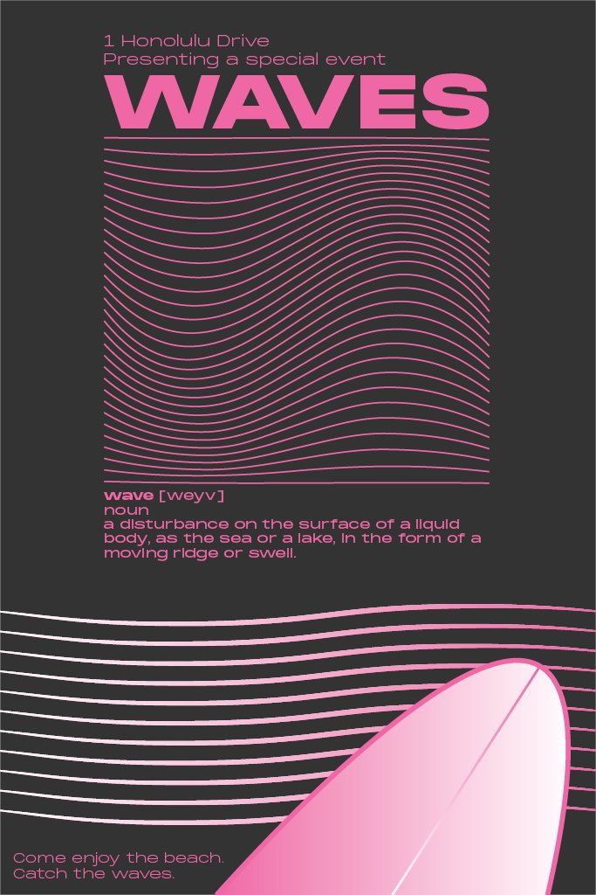
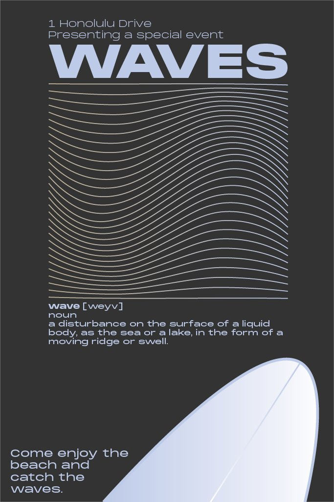

A study in visual tension — where rigid symmetry meets deliberate disruption. What happens when order is pushed just far enough to break?
Overview
Symmetrically Unorthodox began as an experiment in formal constraint. Start with perfect bilateral symmetry, then introduce controlled chaos — each decision made with intention, never at random.
The result is a series of illustrations that feel simultaneously balanced and unsettled. Familiar forms made strange by subtle deviations from the expected.


Waves poster series — pink and blue colourways
Process
The work started in pencil — loose gestural forms refined digitally. Each composition went through at least three symmetry passes before the deliberate breaks were introduced. Nothing was accidental.
Color was the final decision. Deep navy and violet, punctuated by warm coral accents that interrupt the cool equilibrium and draw the eye to the point of rupture.
Final composition — digital, 2025
Reflection
Constraints are generative. The symmetry rule didn't limit the work — it gave it structure to push against. The most interesting moments happened right at the edge of the rule breaking.